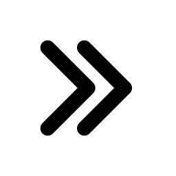
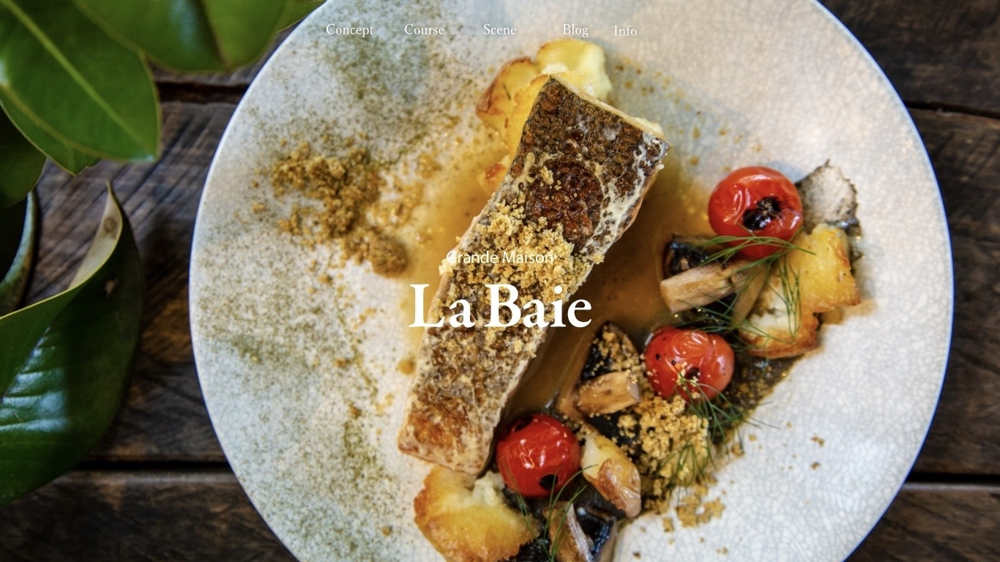
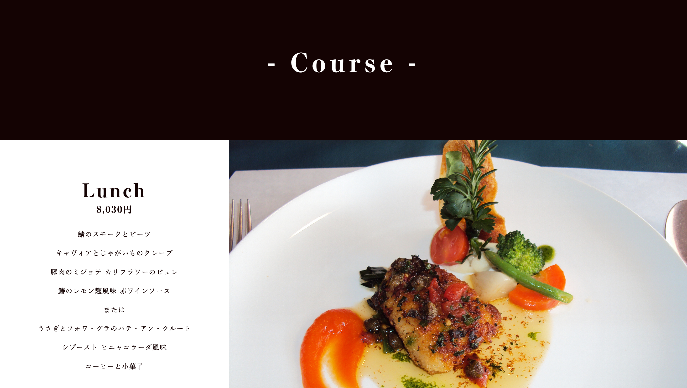
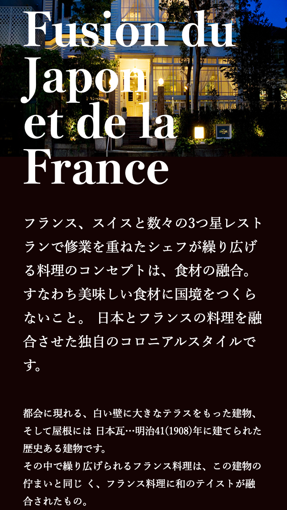

ー Webサイトデザイン+コーディング
Webサイトデザイン
+コーディング
使用ツール
AdobeXD
製作期間
1週間と5日
使用言語
HTML
CSS
担当箇所
リサーチ
デザインカンプ作成
コーディング
制作背景
HAL3校合同コンテストにて、「高級フレンチレストランのトップページを作成する」といった課題が課されたため。
また、グリッドレイアウトの演習のため。
制作における課題
- ・高級フレンチレストラン Grande Maison La BaieのWebサイトの作成
- ・グリッドレイアウトを使用する。（グリッドレイアウトの演習も兼ねているため必須）
- ・提示されたクライアントからの制作依頼に沿ったデザインをする。
- ・お店の雰囲気とイメージ、また食事へのこだわりを伝えることのできるトップページが欲しい
- ・サイトの目的→お店の紹介
- ・平均使用金額→10,000円 ※ベーシックな金額
- ・サイトのイメージ→高貴で洗練されたイメージ
- 【掲載希望内容は以下の通り】
「お店の特徴やコンセプト」
「インフォメーション(営業時間・営業日・電話など)」
「ブログ(最近のエントリー簡易紹介)」
「予約・問い合わせ」
「様々なシーンでのご利用について」
依頼内容
課題解決のためのリサーチ
①リサーチ
- ・依頼書を熟読
- ・イメージを掴むためにフランス料理店のサイトを調査（本場フランスのフランス料理店HPも閲覧）
- ・同価格帯のレストランのサイトを調査
- ・高級感のあるサイトを調査
- ・グリッドレイアウトのWebデザインにおける使用例を調査
②リサーチをもとに分析
- ・高級感を出すために余白を取り余裕を表現すると良い
- ・カラーは暗く重厚感のあるもの、もしくは白に近いものが良い
- ・フォントは強弱のあるセリフ体や明朝体を使用すると良い
- ・メニューはコース料理であることが多い
- ・グリッドレイアウトは同等の情報を複数並べるのに向いている
③行動
- ・ファーストビューは料理を背景にナビゲーションとロゴのみというシンプルなデザインにした
- ・バックグラウンドカラーは高級感もありつつ、あたたかみのあるカラーを使用
- ・全体的に余白を広めにとる
- ・建物紹介にて一目で多くの情報を届けるためにグリッドレイアウトを使用
- ・コースメニューは大きめのグリッドレイアウトを使用

ー コンセプト ー
お店でゆったりと過ごすイメージと
高級感が伝わるデザイン
ー ターゲット ー
お金に余裕のある
20代後半〜40代の会社員
作品の工夫点

①ファーストビューで余裕を表現
- ・ナビゲーション+ロゴのみのシンプルなデザインで余裕（流れる時間のゆったりさや店内の雰囲気）を表現
- ・レストランであり、食事へのこだわりを伝えたいため、背景写真は料理を使用
- ・ナビゲーションは内側に小さくキュッとまとめることで食事や建物の繊細さをイメージさせるようにしている
②テキスト
- ・フォントは強弱のある明朝体を使用し高級感を表現
- ・テキストのジャンプ率に気を配り、メリハリのあるデザインを心がけた
- ・見出しの文字間隔を広めに取り、余裕を表現

③コンテンツの優先順位を意識
- ・店の雰囲気と食事へのこだわりを伝えることが最優先であると常に意識
- ・コース料理紹介では実際のメニューを意識したレイアウトを使用
- ・店内の雰囲気は最初での紹介だけでなく、コンテンツの合間にも店内の写真を配置しユーザーが無意識のうちに伝わるよう工夫した
- ・店舗が横浜山手にあることを伝えるため、横浜山手らしい写真をフッターに配置
④シーン別のご利用案内
- ・大事なシーンでのご利用で素敵な体験をお届けしたいという想いを伝えるため、リボンのかかったプレゼントをイメージしたデザインにした
- ・それぞれリンクにして詳細は別ページに飛ばすことで、トップページ全体の情報量を減らし、さらに重要な情報が霞まないようにデザインした


⑤レスポンシブ対応
- ・PC、スマートフォン、タブレットの3つに対応させた
良かった点
- ・2週間弱といった厳しいスケジュールの中、完成度をここまで高められたこと
- ・HAL3校合同コンテストにて独創力賞を受賞することができたこと
- ・リサーチ結果を作品に反映し、活かすことができたこと
反省点
- ・-Corse-、-Blog-などの見出しがコンテンツの上につくのか下につくのか分かりづらかったため、見出しの上余白をもう少し開けると良かった
- ・ナビゲーションやシーン別利用案内のリンクなどにホバーアニメーションをつけるとよかった
- ・全体的に遊び心のあるアニメーションを少し付けたら良かった
- ・スマートフォンやタブレットの際に一部レイアウトが崩れてしまうところがある（時間が足りなかった）